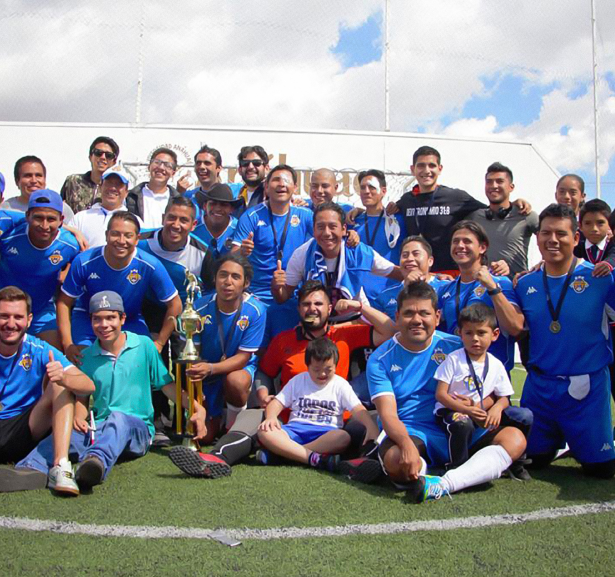

|  | Tops F.C. varonil |
El equipo de Topos Varonil FC comienza a rodar la pelota desde 2010, y actualmente cuenta con la categoría Libre y la categoría Juvenil. Gracias al esfuerzo de los jugadores, y su compromiso por ser un referente deportivo y comunitario, hemos logrado obtener 4 Campeonatos Nacionales, y hemos logrado formar atletas de alto rendimiento que han participado en justas internacionales junto a la Selección Nacional de Fútbol para Ciegos. Por su parte, la categoría Juvenil ha logrado obtener 3 campeonatos Nacionales. |